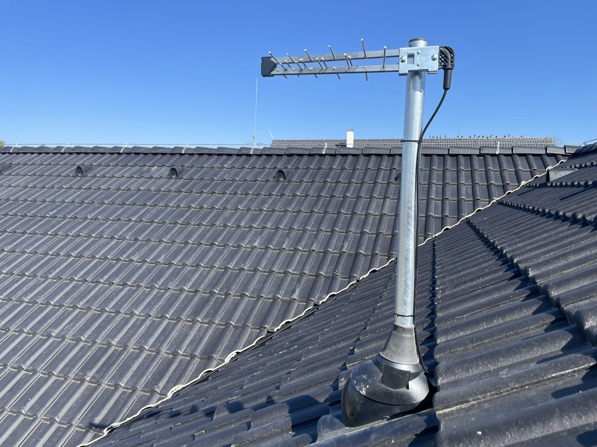
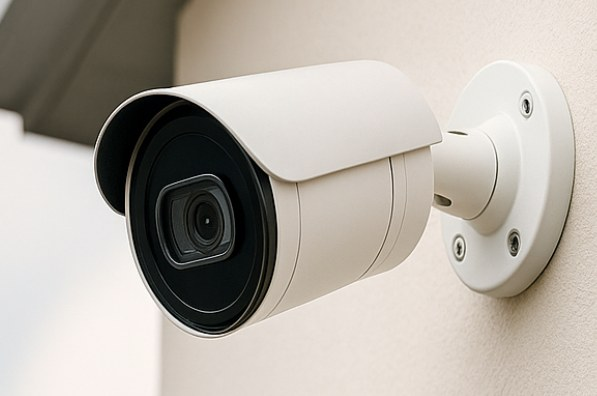
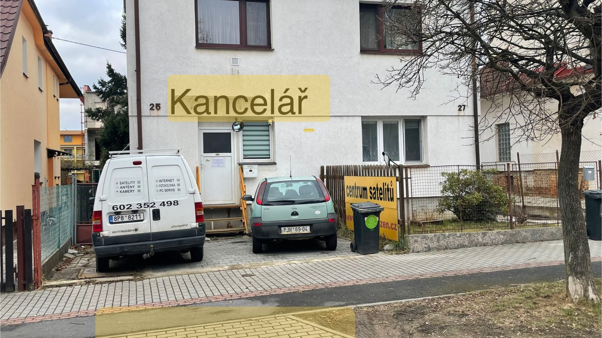
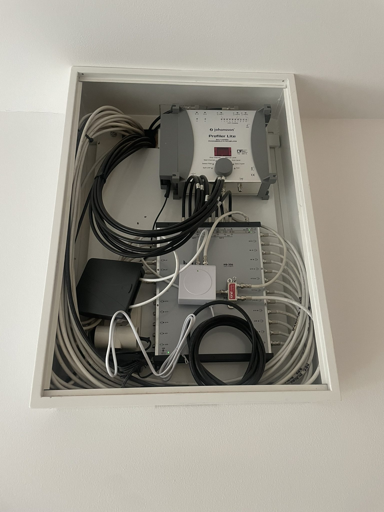
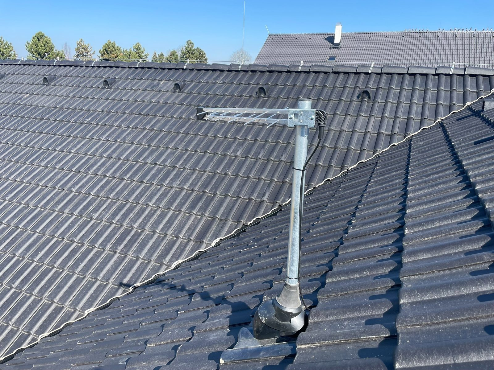
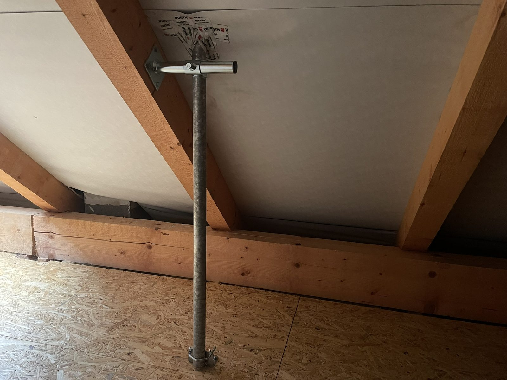
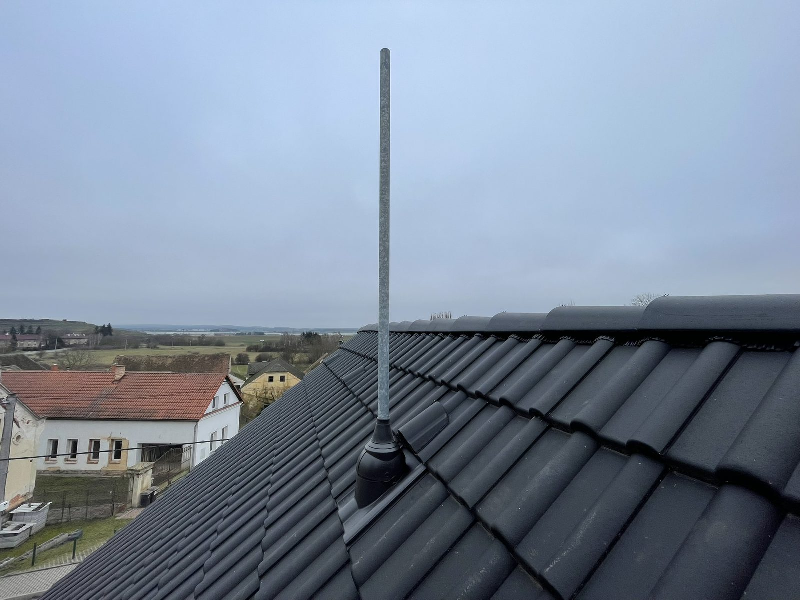
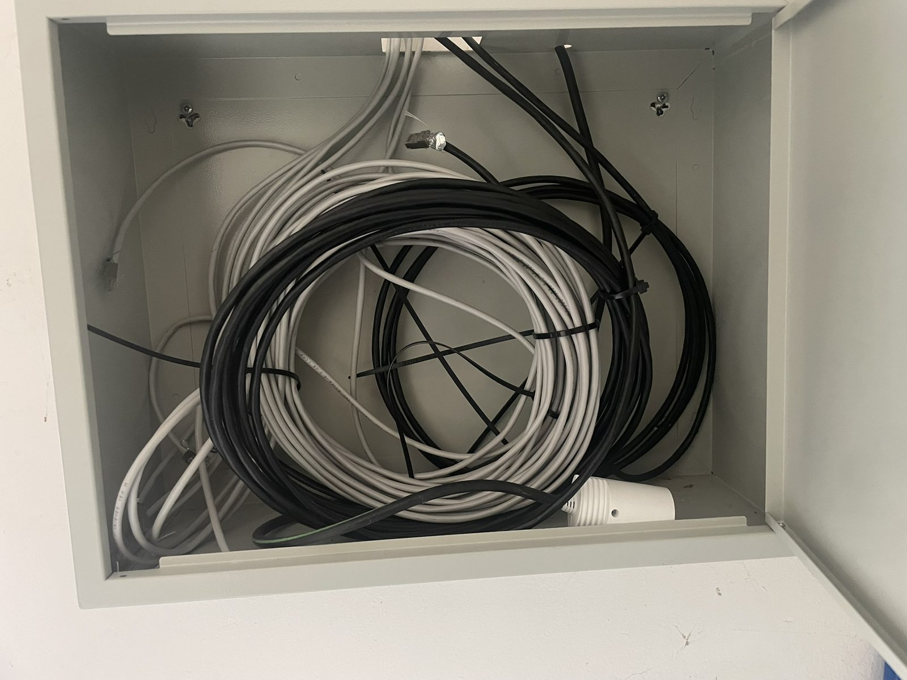

Televizní antény DVB‑T2
Montáž, měření a opravy TV antén, ladění programů, zesilovače, rozbočovače, LTE filtry a řešení výpadků signálu.
Více o anténáchŘeším televizní signál, satelitní příjem, kamerové systémy, internetové rozvody i montáž anténních stožárů. Přijedu, změřím signál, navrhnu řešení a vše nastavím tak, aby technika jednoduše fungovala.
Web je připravený jako lokální SEO prezentace pro služby v Plzni. Každá důležitá služba má samostatnou stránku, vlastní nadpisy, popis a prostor pro další rozšíření.

Montáž, měření a opravy TV antén, ladění programů, zesilovače, rozbočovače, LTE filtry a řešení výpadků signálu.
Více o anténách
Montáž parabol, nastavení LNB, DiSEqC, rozvody do více místností a diagnostika satelitního příjmu.
Více o satelitech
Kabelové i bezdrátové kamery, online náhled v mobilu, záznam na disk, SD kartu nebo cloud a nastavení aplikace.
Více o kamerách
LAN kabeláž, datové zásuvky, Wi‑Fi, připojení kamer, televizorů a síťových prvků v domě či provozovně.
Více o rozvodech
Montáž stožárů, držáků, konzolí a kotevních prvků pro antény, paraboly a techniku na střechách.
Více o stožárech
Diagnostika poruch, návrh řešení, výběr vhodné techniky, opravy signálu a nastavení zařízení u zákazníka.
KontaktovatNeprodávám jen krabičky. Důležité je správné umístění antény, měření signálu, kabeláž, zesílení, rozbočení a nastavení zařízení přímo v místě.

Reálné fotografie montáží antén, stožárů, rozvaděčů a kabeláže. Právě tyto fotky dělají web důvěryhodnější než anonymní fotobanka.




SatAimer
Mnou vyvinutá česká aplikace pro snadné zaměření satelitní paraboly. Pomocí AR zobrazení přes kameru telefonu ukáže směr k vybrané družici přímo na displeji.


Zavolejte nebo pošlete fotky místa instalace. Podle situace navrhnu vhodné řešení.
Kontakt
Zavolejte pro rychlou domluvu, nebo pošlete fotky střechy, rozvaděče, antény, paraboly či místa pro kameru. Provozovna je v Plzni na adrese Partyzánská 25.
Centrum satelitů – Antény Plzeň
Partyzánská 25
312 00 Plzeň
Telefon: 602 352 498
E-mail: info@anteny-plzen.cz
IČO: 87150671
DPH: neplátce DPH
Příjezd a návštěvu provozovny je vhodné domluvit předem telefonicky.
Mapa a provozovna
Příjezd k provozovně Centrum satelitů v Plzni. Návštěvu je vhodné domluvit předem telefonicky.